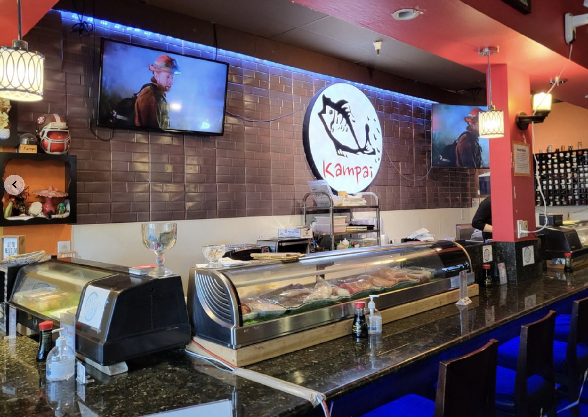

Kampai
Our History
Nestled in the heart of the city since 2017, Kampai Sushi & Grill has been delighting guests with a unique fusion of traditional Japanese and Korean BBQ cuisines. Founded with a passion for high-quality food and exceptional dining experiences, our restaurant has quickly become a favorite among locals and visitors alike.

Our Values
- Quality: We prioritize using fresh, high-quality ingredients to ensure the best taste and experience for our guests.
- Integrity: We are committed to honesty and transparency in all aspects of our business, from sourcing ingredients to serving our customers.
- Community: We believe in building strong relationships with our community and contributing positively to our local area.
- Innovation: We continuously strive to enhance our menu and services, keeping up with culinary trends and customer preferences.
Our Hours
- Mon-Thu 5:00PM - 9:30 PM
- Fri-Sat: 11:30PM - 2:30PM
- 5:00 PM - 10:00 PM
- Sun 11:00 AM - 9:00 PM 